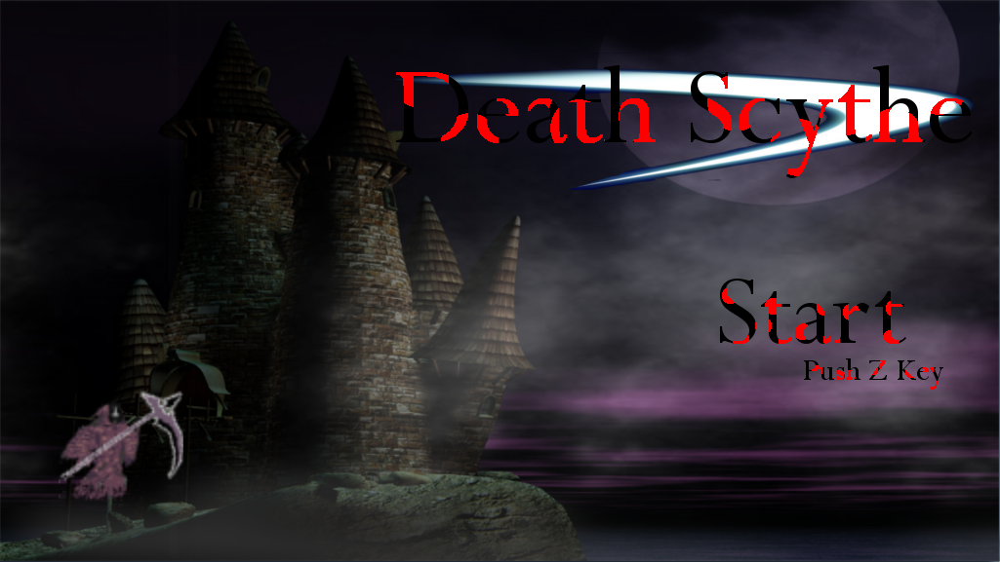
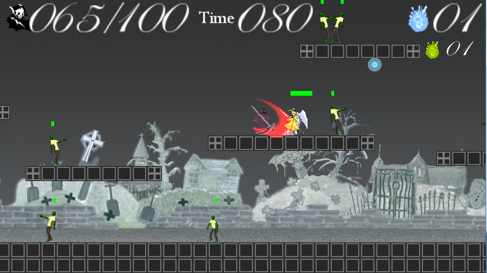

Gallery
このページでは、私がこれまでに制作した作品を紹介します。DeathScythe
【完成日2012.12.21 制作期間50日】
サンプルイメージ
 
作品説明
この作品は、授業で行ったチーム制作での作品です。
横スクロールというテーマの中で、ダークヒーローをモチーフに制作しました。
フィールド上のゾンビを倒し、より多くの魂を刈り取ることでスコアを伸ばし、
ランキングを更新していきます。
天使は、死神を攻撃するかゾンビを攻撃するか選び、行動しています。
天使に魂を取られると、スコアが伸びづらくなります。
一定以上攻撃すると打てるようになる大技で、大量に刈り取る爽快感を感じて下さい。
何を工夫したか
死神の攻撃にコンボを加え、うまく攻撃することで、早く大技を撃つことができます。
天使は、死神が近づかないと、周りのゾンビを探して攻撃しに行きます。
スコアはランキングに保存され、最大５つまで表示されます。
沢山のエフェクトで派手さを出しました。
どこを見て欲しいか
エフェクトが多く使われていて、演出が派手になっています。
天使は、ゾンビを選んで攻撃しに行きます。
スコアがテキストに保存され、昇順に更新されます。
| 開発環境 | C# |
|---|---|
| 使用ツール | XNA |